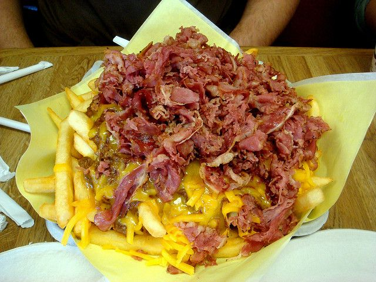

Chilli Cheese Fries With Pastrami

Chilli cheese fries with pastrami is a comfort meal in my home and I'm bringing it over to yours with this quick and simple recipe!
Enjoy it while you can because you will never satisfy your taste for fries again once you have a taste of this concoction!
Ingredients:
- 1/2 a bag of frozen fries
- 1/2 lb. of sliced american cheese
- 1 L of canola oil
- 1 lb. of pastrami
Steps:
- Heat oil to 350 degrees fahrenheit
- Fry all fries at once in the oil
- Take out fries when they are nicely golden brown, draining excess oil by letting the fries lay on top of a paper towel laced bowl
- Fry the pastrami in the oil too until they just turn crispy
- Add pastrami to the fries, tossing them around in the bowl
- Place a portion of fries and pastrami on a plate and serve with slices of american cheese on top
- Enjoy your creation!